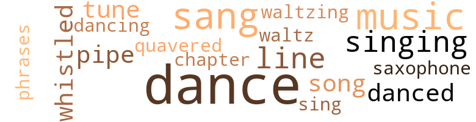
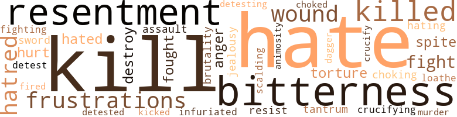

Somebody Please Help Me, by Battles, Jesse Moore (1965)
47 music-related terms matched in this text.
Most frequent terms in this topic: dance (13); sang (5); music (4); singing (3); line (3)
chapter.n.01
Definition: a subdivision of a written work; usually numbered and titled
| word | sentence |
|---|---|
| chapter | The eighteenth chapter , and sixth verse of Matthew . |
dance.n.01
Definition: an artistic form of nonverbal communication
| word | sentence |
|---|---|
| dance | Incidentally , are you going to the dance tonight with the rest of the bunch ? " |
| dance | " This sort of dance does n't require your best , " Toni said . |
| dance | " There is a dance tonight at the Community Center , and I came to ask you if I can go with Toni ? " |
| dance | " Is this dance only for teen-agers ? " |
| dance | Nora knew timidity , fear , and resentment when she saw it , and she saw it for the first time in Venus ' eyes when she gave her permission to go to the dance . |
| dance | There was a tremendous crowd at the dance . |
| dance | Freddie continued to regard Paulette with admiration all that night at the dance . |
| dance | Paulette had forgotten everything at the dance , except that Freddie 's dark eyes searched her whole body hungrily , as she deliberately tantalized him with a display of her charms . |
| dance | The evening had begun with a dance at Woodson High School during which she had met Freddie . |
| dance | When the dance was over , Freddie 's car headed toward Central Avenue , the gleam of its headlights probing the sleeping streets . |
dance.v.02
Definition: move in a pattern; usually to musical accompaniment; do or perform a dance
| word | sentence |
|---|---|
| dancing | She felt a desperate longing to be dancing too , and feeling a boy 's arms encircling her body . |
dance.v.03
Definition: skip, leap, or move up and down or sideways
| word | sentence |
|---|---|
| dance | " Do you want to dance , Toni ? " |
| dance | " Would you like to dance , Venus ? " asked Paul , regarding her with bright hazel eyes , a smile on his face . |
| dance | I do n't know how to dance . " |
| danced | Couples danced vigorously around the dance floor , momentarily oblivious of the cold November wind that brushed , not too gently , against the school . |
| danced | Everyone danced and talked vivaciously at the same time . |
music.n.01
Definition: an artistic form of auditory communication incorporating instrumental or vocal tones in a structured and continuous manner
| word | sentence |
|---|---|
| music | He stared at her appraisingly through the mirror , at the same time twisting his narrow shoulders rhythmically with the music that blasted from the juke box . |
| Music | Music began to flood the dance hall , and couples started waltzing vivaciously across the floor . |
| music | The music resumed at last , playing one of Freddie 's favorite numbers , and Frank Sinatra 's remarkable voice sounded through the room singing " All The Way . " |
| music | Paulette was still in Freddie 's arms when the music ended . |
| music | " I always go by bus , " she stammered , a bit embarrassed because she had not realized that the music had stopped . |
phrase.n.02
Definition: a short musical passage
| word | sentence |
|---|---|
| phrases | She could visualize Freddie talking to her in endearing phrases of love , his hands caressing hers , and his eyes glowing with a desire she could not resist . |
pipe.n.04
Definition: a tubular wind instrument
| word | sentence |
|---|---|
| pipe | All this was very apparent to Venus as she passed the glass-enclosed cigar counter , attended by an elderly bald-headed man who was smoking a pipe and keeping an eye on the cash register . |
| pipe | Paulette 's father Albert would sit smoking his pipe , listening disapprovingly , but he did not have the courage to defend her . |
sax.n.02
Definition: a single-reed woodwind with a conical bore
| word | sentence |
|---|---|
| saxophone | The sound of Charlie Parker 's saxophone came softly and monotonously down the wind , from one of the corner taverns . |
sing.v.02
Definition: produce tones with the voice
| word | sentence |
|---|---|
| sang | Their lips met and her blood sang with ardor . |
| sang | Birds sang gaily in the trees and hopped boldly about the ground , showing no fear of human beings . |
| sing | The birds began to sing again ; faded leaves blew quietly along the ground with the April wind , and the trees stood up straight like giants defying the wind . |
| sang | The memory of those lover 's nights , when the crickets sang , and they whispered to each other in the car parked on the river bank , came back to her . |
| sang | The wind sang loudly and the car motor whined as the early-morning workers started off to begin their day . |
| sang | They lingered upon two teen-agers shamelessly embracing under a tree , while the leaves above their heads sang a tune they could not hear . |
singing.n.01
Definition: the act of singing vocal music
| word | sentence |
|---|---|
| singing | He was singing , " I Lost Someone . " |
| singing | Occasionally a drunk passed by singing or cursing , realizing too late that his family might have to go hungry and bills remain unpaid because he had acted like a stupid fool and used his pay check to pay for a binge . |
| singing | The music resumed at last , playing one of Freddie 's favorite numbers , and Frank Sinatra 's remarkable voice sounded through the room singing " All The Way . " |
song.n.01
Definition: a short musical composition with words
| word | sentence |
|---|---|
| song | " You did n't offend me , " Toni said , while the sentimental voice of James Brown sent little chills through her as the song ended . |
| song | There was hope in her eyes , and a song on her lips , to ease her repressed emotions . |
tune.n.01
Definition: a succession of notes forming a distinctive sequence
| word | sentence |
|---|---|
| tune | They started toward the boys , easing their way through a crowd of couples who were now doing the twist to the tune of Chubby Checkers ' voice coming from the hi-fi . |
| line | Captain O'Brien continued to stand in the doorway , gazing toward the reception desk , watching the people as they stood in line waiting restlessly to be received . |
| line | She left the receiving line and came toward him hurriedly . |
| tune | They lingered upon two teen-agers shamelessly embracing under a tree , while the leaves above their heads sang a tune they could not hear . |
| line | The telephone company was threatening to disconnect their line because of unpaid bills , and they were a month behind in rent when Venus returned . |
waltz.v.01
Definition: dance a waltz
| word | sentence |
|---|---|
| waltzing | Music began to flood the dance hall , and couples started waltzing vivaciously across the floor . |
| waltz | Venus thought for a minute , watching the couples waltz around the floor . |
warble.v.01
Definition: sing or play with trills, alternating with the half note above or below
| word | sentence |
|---|---|
| quavered | Her voice quavered when she spoke to Paul . |
whistle.v.01
Definition: make whistling sounds
| word | sentence |
|---|---|
| whistled | Two boys whistled admiringly at Venus as they whizzed past her on bicycles . |
| whistled | The wind whistled past the car and snowflakes brushed the windows , as it sped toward its destination . |
79 violence-related terms matched in this text.
Most frequent terms in this topic: kill (7); bitterness (6); resentment (5); hate (5); killed (5)
abhor.v.01
Definition: find repugnant
| word | sentence |
|---|---|
| loathe | I loathe the very sight of her . |
anger.n.01
Definition: a strong emotion; a feeling that is oriented toward some real or supposed grievance
| word | sentence |
|---|---|
| Anger | Anger swept her , as she walked on , remembering . |
| anger | Then suddenly anger of the small sad figure on the bridge . |
animosity.n.01
Definition: a feeling of ill will arousing active hostility
| word | sentence |
|---|---|
| animosity | Facing Venus ; Paulette looked into the child 's face with bitter animosity . |
blister.v.02
Definition: subject to harsh criticism
| word | sentence |
|---|---|
| scalding | She ran with tears scalding her eyes , uncertain of her destination . |
crucify.v.01
Definition: kill by nailing onto a cross
| word | sentence |
|---|---|
| crucifying | Or have you enlarged it be crucifying Venus for the evildoings of your own daughter ? |
| crucify | The adults crucify their children because of their own inability to attain maturity of mind . |
dagger.n.01
Definition: a short knife with a pointed blade used for piercing or stabbing
| word | sentence |
|---|---|
| dagger | Venus 's cry of pain had pierced Helen 's heart like a dagger and for the first time in her life she felt a bitterness toward Paulette . |
destroy.v.04
Definition: put (an animal) to death
| word | sentence |
|---|---|
| destroy | Nora now assented to Venus 's every wish , and sent her out into an environment that was bound to destroy her . |
| destroy | Oh Paul - ette , my sister , please stop and think before you destroy your child 's life , Helen cried within herself . |
ferociousness.n.01
Definition: the trait of extreme cruelty
| word | sentence |
|---|---|
| brutality | Many teen-age girls and boys , victimized by her warped mind and by her physical brutality , were forced to commit perjury to free themselves from her hateful grip . |
fight.n.05
Definition: a boxing or wrestling match
| word | sentence |
|---|---|
| fight | " There is no fight in her , " Dr. Ferguson said . |
| fight | " I 've been a doctor for thirty-five years , " he finally said slowly , " and I have never seen a human being fight for life as this child is fighting . " |
fight.v.02
Definition: fight against or resist strongly
| word | sentence |
|---|---|
| fight | Toni sensed Venus 's intense discomfort , and could not fight back her tears . |
| fought | The guy fought until he was completely exhausted , screaming , ' You ca n't kill me , you rotten dogs ; ca n't you see I 'm already dead ? |
| fighting | " I 've been a doctor for thirty-five years , " he finally said slowly , " and I have never seen a human being fight for life as this child is fighting . " |
| fought | The one feeling that she had furiously fought to defeat , came back to her - the cruel inescapable feeling of worthlessness . |
fit.n.01
Definition: a display of bad temper
| word | sentence |
|---|---|
| tantrum | Mother will have a tantrum when I do get home , she told herself . |
frustration.n.03
Definition: a feeling of annoyance at being hindered or criticized
| word | sentence |
|---|---|
| frustrations | After living among other wayward girls for a year - girls who had known similar frustrations - Toni decided that she wanted to make something out of herself , regardless of her trials . |
| frustrations | They reminded her of her own frustrations and she retaliated with brutal treatment , even if the charges against them were minor . |
| frustrations | Nobody in the world knew Venus as she knew her - her melancholy , her bewilderment , her strange compulsions , her undying desire to love and be loved , her frustrations , and her dearest dreams . |
gag.v.06
Definition: cause to retch or choke
| word | sentence |
|---|---|
| choking | The cry that came from Venus was a choking cry , not a cry of resentment , but a cry of appalling loneliness . |
| choked | " Yes , for a while , if Paulette does n't come hack , " Helen declared , choked with doubt , as she stared across the room at the large bedroom dresser - one of the few things Eugene had been able to buy her last Christmas . |
hate.n.01
Definition: the emotion of intense dislike; a feeling of dislike so strong that it demands action
| word | sentence |
|---|---|
| hatred | I 've saw them instilled with hatred , bitterness , and a desire for revenge against the whole world , because their parents or some foolish adult made them feel utterly worthless . |
| hate | I learned how to give rather than receive , to love rather than hate , to encourage , rather than to condemn . |
| hatred | His hatred of others made him reluctant to talk at first , but finally he told me his story , and every word of it pierced my heart like a sword . |
| hatred | Days , weeks , and months went by and the hatred and bitterness grew in Paulette 's soul . |
hate.v.01
Definition: dislike intensely; feel antipathy or aversion towards
| word | sentence |
|---|---|
| hates | She hates me , Nora thought regretfully , walking back to the couch . |
| hating | Somewhere on this earth Paulette is destroying herself , and hating me because I denied her a mother 's love . |
| hated | Other policemen were pleasant to him , judges confided in him , crooked lawyers shunned him , and political hypocrites feared and hated him . |
| hate | It was there that he learned to hate , to rebel , and to oppose every semblance of human goodness . |
| hates | Toni hates me , she told herself . |
| hate | If it were possible for me to hate all of them , should Venus die , perhaps I would . |
| hate | " I hate you Freddie Johnson , you drunken bastard , " she said to herself . |
| detest | " I detest everything you represent , even your dirty baby . |
| hate | She smiled at the stranger , but her face was stamped with bitterness against a world she would hate forever . |
| detesting | " Thanks , Helen , " Paulette replied peevishly , detesting the child beside her . |
| detested | When Paulette was born four years later , Nora had become more resentful of Albert , and she detested Paulette . |
| hated | Surely Paulette and father must have hated me . |
infuriate.v.01
Definition: make furious
| word | sentence |
|---|---|
| infuriated | Paulette 's words had infuriated him . |
injury.n.01
Definition: any physical damage to the body caused by violence or accident or fracture etc.
| word | sentence |
|---|---|
| hurt | But I was young , foolish , confused , and hurt , determined to avenge myself on the world . |
jealousy.n.01
Definition: a feeling of jealous envy (especially of a rival)
| word | sentence |
|---|---|
| jealousy | She stared at the girl , wide-eyed with jealousy . |
kick_back.v.02
Definition: spring back, as from a forceful thrust
| word | sentence |
|---|---|
| kicked | He " kicked a chair viciously , turning it over , and sprawled across the couch . |
kill.v.10
Definition: cause the death of, without intention
| word | sentence |
|---|---|
| killed | The poor child does n't even know that her father was killed a week after he was released from prison , Nora thought . |
| kill | I 've seen some of them lose all faith in life and stare into the heavens cursing God , daring Him to kill them - because they wanted to die and did n't have the courage to kill themselves . |
| kill | I 've seen some of them lose all faith in life and stare into the heavens cursing God , daring Him to kill them - because they wanted to die and did n't have the courage to kill themselves . |
| killed | Grandma said that father had been killed , so he must be happy now . |
| kill | The guy fought until he was completely exhausted , screaming , ' You ca n't kill me , you rotten dogs ; ca n't you see I 'm already dead ? |
| kill | Each time he was struck , he begged them to kill him . |
| killed | They killed every cell in the man that night . |
| killed | If the answer to my last question is yes , Mrs. Adams , you are guilty of a crime as brutal as the crucifixion of Christ , for you have killed her joy for living . " |
| kill | " There are so many ways to kill a human being , Mrs. Adams , " Captain O'Brien went on to explain , " a hostile smile , an injustice , a lie , criticism , and a hypocritical attitude . |
| kill | He will kill his own parents , lie , cheat , and steal . |
| killed | If Venus dies , I shall feel that I killed her with my own hands . |
| kill | The most hostile and inhuman injustice that anyone can commit against another , Helen thought , whenever she looked into Venus 's brown eyes , is to kill a child , then force it to live . |
malice.n.01
Definition: feeling a need to see others suffer
| word | sentence |
|---|---|
| spite | She smiled in spite of herself . |
| spite | She began to tremble in spite of her determination to control her nerves . |
murder.n.01
Definition: unlawful premeditated killing of a human being by a human being
| word | sentence |
|---|---|
| murder | To me , this is murder in the first degree . " |
open_fire.v.01
Definition: start firing a weapon
| word | sentence |
|---|---|
| fired | I got fired today and I 'm sick of supporting your sister 's child . |
pain.v.02
Definition: cause emotional anguish or make miserable
| word | sentence |
|---|---|
| hurt | After you found out I had lied , it would hurt you . |
rape.n.03
Definition: the crime of forcing a woman to submit to sexual intercourse against her will
| word | sentence |
|---|---|
| assault | She saw that he was dressed in a thin soiled summer suit which appeared to crumble under the assault of the hungry wind . |
resentment.n.01
Definition: a feeling of deep and bitter anger and ill-will
| word | sentence |
|---|---|
| resentment | The cry that came from Venus was a choking cry , not a cry of resentment , but a cry of appalling loneliness . |
| resentment | This had made Venus develop a dangerous resentment toward her , mingled with fear and timidity . |
| resentment | Nora knew timidity , fear , and resentment when she saw it , and she saw it for the first time in Venus ' eyes when she gave her permission to go to the dance . |
| bitterness | I 've saw them instilled with hatred , bitterness , and a desire for revenge against the whole world , because their parents or some foolish adult made them feel utterly worthless . |
| bitterness | She was jealous of youth and harbored an especial bitterness toward young girls who were exuberant and beautiful . |
| bitterness | " How far gone are you ? " he asked insolently , making no effort to hide his bitterness toward her . |
| resentment | It was a face reflecting grief mingled with a vague touch of resentment . |
| bitterness | She smiled at the stranger , but her face was stamped with bitterness against a world she would hate forever . |
| bitterness | Days , weeks , and months went by and the hatred and bitterness grew in Paulette 's soul . |
| resentment | Toni whispered gently , looking at Nora with resentment in her eyes . |
| bitterness | Venus 's cry of pain had pierced Helen 's heart like a dagger and for the first time in her life she felt a bitterness toward Paulette . |
resist.v.04
Definition: withstand the force of something
| word | sentence |
|---|---|
| resist | " You torture a man with your loveliness , and then ask him to resist you . |
sword.n.01
Definition: a cutting or thrusting weapon that has a long metal blade and a hilt with a hand guard
| word | sentence |
|---|---|
| sword | His hatred of others made him reluctant to talk at first , but finally he told me his story , and every word of it pierced my heart like a sword . |
torment.v.01
Definition: torment emotionally or mentally
| word | sentence |
|---|---|
| torture | " But it does n't do any good to torture yourself as you are doing . |
| torture | " You torture a man with your loveliness , and then ask him to resist you . |
wound.n.01
Definition: an injury to living tissue (especially an injury involving a cut or break in the skin)
| word | sentence |
|---|---|
| wound | His clothes were smeared with blood from a nasty wound above his right eye , and he was hardly able to walk . |
| wound | Have you mended the bitter wound Paulette made in the childs ' heart ? |
wound.n.04
Definition: the act of inflicting a wound
| word | sentence |
|---|---|
| wound | Is there a chance to heal the deep wound I have inflicted upon her ? |
53 religion-related terms matched in this text.
Most frequent terms in this topic: God (14); Jesus (5); Christ (5); faith (4); devil (2)
blessing.n.05
Definition: the act of praying for divine protection
| word | sentence |
|---|---|
| blessing | This supreme blessing could only have been conferred by an all-Loving and merciful Creator . |
| blessing | She felt it was a blessing to be living , and that the whole world was smiling with her . |
eden.n.01
Definition: any place of complete bliss and delight and peace
| word | sentence |
|---|---|
| heavens | I 've seen some of them lose all faith in life and stare into the heavens cursing God , daring Him to kill them - because they wanted to die and did n't have the courage to kill themselves . |
| Eden | They could be a symbol of its immaturity and suffering ever since Adam and Eve lived in the garden of Eden . |
| heaven | When we in our youth violate a law against society or heaven , it is usually from those that govern us that we acquired our habits ; still we are forced to shoulder all the blame in order to protect their egos . |
| paradise | Each male face was flushed with gaiety , as if its possessor 's mind were concentrated on paradise ; each female countenance seemed sensuous and receptive . |
| heaven | He urges us to unite in harmony , but prejudice , greed , and wickedness divide us , sending each race in a separate direction , groping for a different God , a different religion , and a different heaven . |
god.n.03
Definition: a man of such superior qualities that he seems like a deity to other people
| word | sentence |
|---|---|
| God | Will God ever forgive me for being so unnecessarily cruel to her ? |
| God | " In the dormitory at night I discovered that I was n't the only one who cried in the dark , begging God to make my life mean something to someone , so that it would mean something to me . |
| God | You must not feel that you are meaningless , because the Almighty God has a fixed purpose for all of us . " |
| God | God has a fixed purpose for all of us , Venus repeated to herself . |
| God | " It was in that place that he first denounced God , nature , and the human race . |
| God | If God spares Venus , I will forever thank Him for showing me the futility of selfishness . |
| God | Maybe God will show mercy and let her live . |
| God | But my bitter experiences have warmed my heart to pity and prayer for the adults who shun the helpless cries of our needs , when we pursue the happiness that God gave all the right to have . |
| God | They are selfish stars , created by a merciless God who allows me to face humiliation , shame , and anxiety without giving me a helping hand . |
| God | " Ca n't people see that God is warning the world against internal corruption ? " |
| God | " The truth is , " the other woman replied , " that people are drifting farther away from God . |
| God | Should I tell her that they were cowards who evaded the responsibility which God gave them ? |
| God | God knows you have everything a child needs . " |
| God | God tells us to love one another , but we quarrel with our neighbors . |
godhead.n.01
Definition: terms referring to the Judeo-Christian God
| word | sentence |
|---|---|
| Almighty | You must not feel that you are meaningless , because the Almighty God has a fixed purpose for all of us . " |
| Creator | This supreme blessing could only have been conferred by an all-Loving and merciful Creator . |
| divine | Still , we do n't have the right to judge them for , as I said , ' To err is human and to forgive divine . ' " |
idol.n.01
Definition: a material effigy that is worshipped
| word | sentence |
|---|---|
| idol | She had been married one month after graduation from Manual High School , the bride of Eugene Woods , her high school idol . |
jesus.n.01
Definition: a teacher and prophet born in Bethlehem and active in Nazareth; his life and sermons form the basis for Christianity (circa 4 BC - AD 29)
| word | sentence |
|---|---|
| Jesus | Deep within Venus 's soul , she felt for the first time so utterly alone and so hopeless that she no longer had a desire to pray to the unknown person she had been taught to believe was Jesus Christ , the Son of God , who beseeched sinners to follow His teachings and find happiness . |
| Jesus | I can now visualize and understand how Jesus Christ felt , when lie said , " Forgive them , for they know not what they do . " |
| Jesus | she wondered , as she studied the oil painting by Peckolino of Jesus Christ that hung beside the window . |
| Jesus | " Would Jesus send mommy and daddy back to me , if I prayed ? " |
| Jesus | Why does n't Jesus send them back to me ? |
messiah.n.01
Definition: any expected deliverer
| word | sentence |
|---|---|
| Christ | Deep within Venus 's soul , she felt for the first time so utterly alone and so hopeless that she no longer had a desire to pray to the unknown person she had been taught to believe was Jesus Christ , the Son of God , who beseeched sinners to follow His teachings and find happiness . |
| Christ | If the answer to my last question is yes , Mrs. Adams , you are guilty of a crime as brutal as the crucifixion of Christ , for you have killed her joy for living . " |
| Christ | Christ in all his glory only carried the cross once . |
| Christ | I can now visualize and understand how Jesus Christ felt , when lie said , " Forgive them , for they know not what they do . " |
| Christ | she wondered , as she studied the oil painting by Peckolino of Jesus Christ that hung beside the window . |
prayer.n.01
Definition: the act of communicating with a deity (especially as a petition or in adoration or contrition or thanksgiving)
| word | sentence |
|---|---|
| prayer | She looked up into the sky with a tearful face and trembling lips , as if murmuring a prayer . |
| prayers | Why has He ignored all of my prayers ? |
| prayer | But my bitter experiences have warmed my heart to pity and prayer for the adults who shun the helpless cries of our needs , when we pursue the happiness that God gave all the right to have . |
| prayers | Her prayers only grew more intense as time passed on . |
religion.n.01
Definition: a strong belief in a supernatural power or powers that control human destiny
| word | sentence |
|---|---|
| faith | I 've seen some of them lose all faith in life and stare into the heavens cursing God , daring Him to kill them - because they wanted to die and did n't have the courage to kill themselves . |
| faith | For some reason that I do not understand , she has lost all faith . " |
| faith | No , I can not crush the little faith she has in life , Helen decided . |
| faith | The weeks stretched into months , and the months into years , yet Venus did not lose faith . |
| religion | We supposedly bring our children up to believe in religion , ethics , and principles , which the majority have long since rejected . |
| religion | He urges us to unite in harmony , but prejudice , greed , and wickedness divide us , sending each race in a separate direction , groping for a different God , a different religion , and a different heaven . |
sacrifice.v.04
Definition: make a sacrifice of; in religious rituals
| word | sentence |
|---|---|
| sacrifice | We must sacrifice for Venus 's sake and pray that providence will bend a little our way . |
saint.n.02
Definition: person of exceptional holiness
| word | sentence |
|---|---|
| angel | Helen was an angel in their mother 's eyes , the pet who got all the love and attention . |
satan.n.01
Definition: (Judeo-Christian and Islamic religions) chief spirit of evil and adversary of God; tempter of mankind; master of Hell
| word | sentence |
|---|---|
| devil | " You are a cute little devil , " Paul said boldly . |
| devil | Oh God , she thought , what in the devil are they doing to her ? |
siren.n.01
Definition: a sea nymph (part woman and part bird) supposed to lure sailors to destruction on the rocks where the nymphs lived
| word | sentence |
|---|---|
| siren | Suddenly the piercing cry ol a siren was heal 'd and a police car away from Police Headquarters a few Mocks from the Juvenile Court building . |
| siren | The stars became brighter as the light waned , and wail of a police siren a few blocks away seemed to Paulette to come from a far-distant city . |
temple.n.03
Definition: an edifice devoted to special or exalted purposes
| word | sentence |
|---|---|
| temples | Venus noticed that her long black hair was light at the edge of her forehead and temples . |
worship.v.02
Definition: show devotion to (a deity)
| word | sentence |
|---|---|
| worshipped | Helen was born two clays before Nora 's thirty-sixth birthday , and Nora had worshipped her from the moment she was born . |